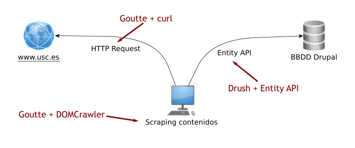
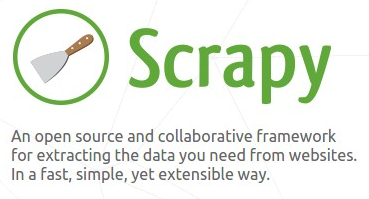

Tomás Vilariño Fidalgo
Ingeniero Informático (UVigo)
Técnico Especialista en Desarrollo Web (UJI)
actualmente en la migración de la web www.usc.es a Drupal 8.
Migración web USC.es
Sitio con miles de páginas
Compleja exportación datos
Mantener misma estructura navegación (SEO)
En esta charla nos centramos en exportar páginas "estáticas"
Utilizar soluciones de exportación del CMS actual, o acceso directo a base de datos
Problemas
Acceder directamente a través de la web y extraer los contenidos.
Utilizar Goutte para recuperar y extraer contenidos.
Insertar en Drupal a través de un comando Drush usando Entity API.
Todo implementado en PHP con componentes alternativos Guzzle y DOMCrawler.

Programación manual de:
Necesitamos algo más que un API de scraping de páginas.
Encontramos framework para programar "arañas"

sudo apt-get install python-dev python-pip libxml2-dev \
libxslt1-dev zlib1g-dev libffi-dev libssl-dev
sudo pip install scrapy
import pymongo
# import ...
class PaxinasPipeline(object):
def __init__(self):
connection = pymongo.MongoClient(
settings['MONGODB_SERVER'],
settings['MONGODB_PORT']
)
db = connection[settings['MONGODB_DB']]
self.collection = db[settings['MONGODB_COLLECTION']]
def process_item(self, item, spider):
for data in item:
if not data:
raise DropItem("Missing data!")
self.collection.update({'url': item['url']}, dict(item), upsert=True)
return item
www.usc.es ... en breve powered by Drupal 8
Gracias